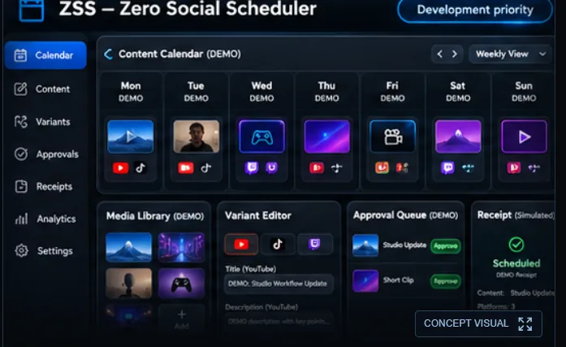
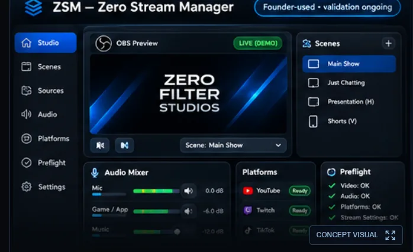
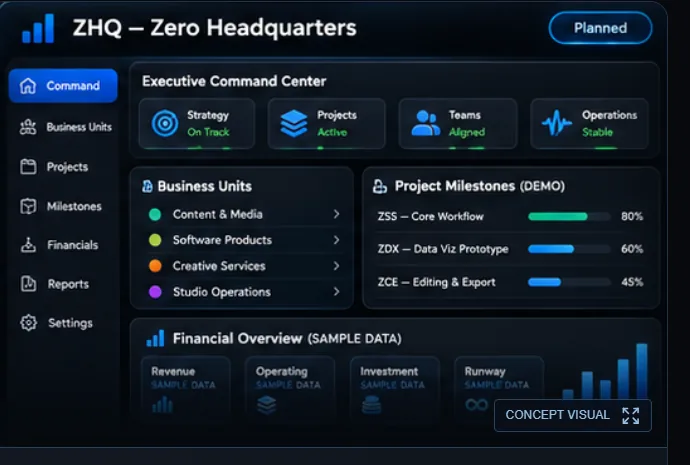
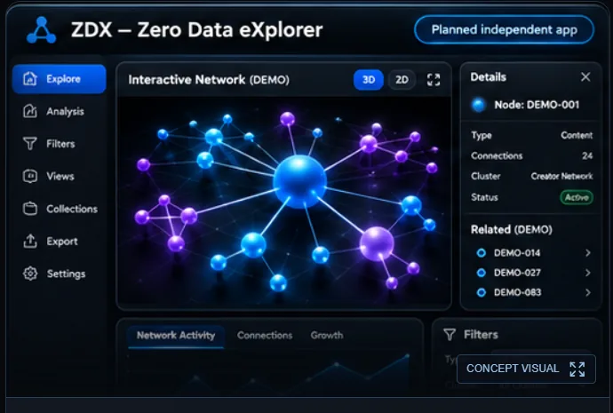
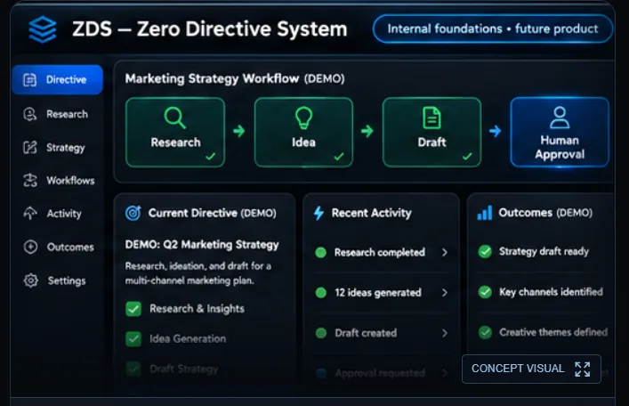
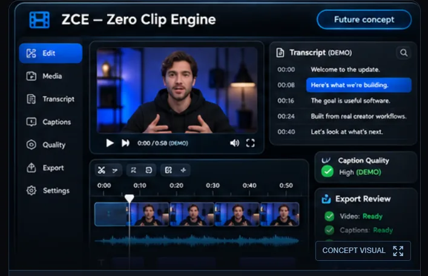

ZSS
Zero Social Scheduler
Development priority
A content calendar with a media library, variant editor, approval queue, and scheduling receipts.
Concept visual
In development
Concept visuals for tools I’m building. These are not finished products, and nothing here is for sale.

ZSS
Development priority
A content calendar with a media library, variant editor, approval queue, and scheduling receipts.
Concept visual

ZSM
Founder-used, validation ongoing
A stream studio with OBS preview, scenes, an audio mixer, platform status, and a preflight checklist.
Concept visual

ZHQ
Planned
An executive command center for strategy, teams, and operations, with business units and project milestone tracking.
Concept visual

ZDX
Planned independent app
An interactive network explorer for mapping connections between nodes, with filters, views, and detail panels.
Concept visual

ZDS
Internal foundations, future product
A directive workflow that moves work from research and ideas to a draft, then a human approval step.
Concept visual

ZCE
Future concept
A clip editor with a timeline, transcript, caption quality checks, and an export review.
Concept visual